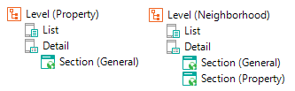
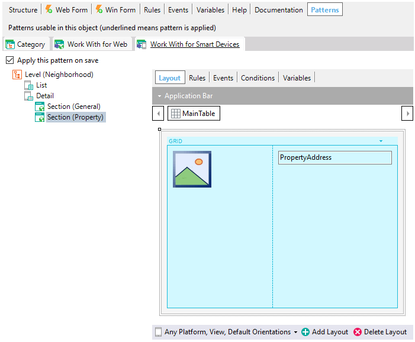

WWSD Pattern instance for Related Transactions
Supposing a Neighborhood Transaction with the following attributes: And a Property Transaction that defines the following relation with the Real Estate Companies Transaction: Upon applying for the Work With Devices pattern to the Property and Neighborhood Transactions, the following instances associated with the Transactions are generated:  The instance generated for the Property Transaction is the same as the one generated for Transactions with more than one level, and Negibhrood will have a Section Node referencing Property Transaction. At runtime, upon selecting a Neighborhood, a Tab will be viewed with the detailed data on that Neighborhood (i.e. Section (General)), and another Tab with the list of Properties (i.e. Section (Property)) corresponding to that Neighborhood.  For the case of more related transactions, a new Section will be generated for each one of them. In this case, because the pattern also applies to the Property transaction, upon clicking on one of the properties from the list, it is possible to edit the property data by calling the Edit generated in the Property transaction instance (since only the View, and not the property’s Edit, is generated from the Real Estate transaction instance). If the pattern is not applied to the Property Transaction, it will only be possible to view the properties from the Property Tab, but upon clicking on any of them, no actions will be executed. See also
Videos
|

| Backlinks |
| Category:Work With for Smart Devices object |
| WWSD Pattern instance for Single-level Transactions |